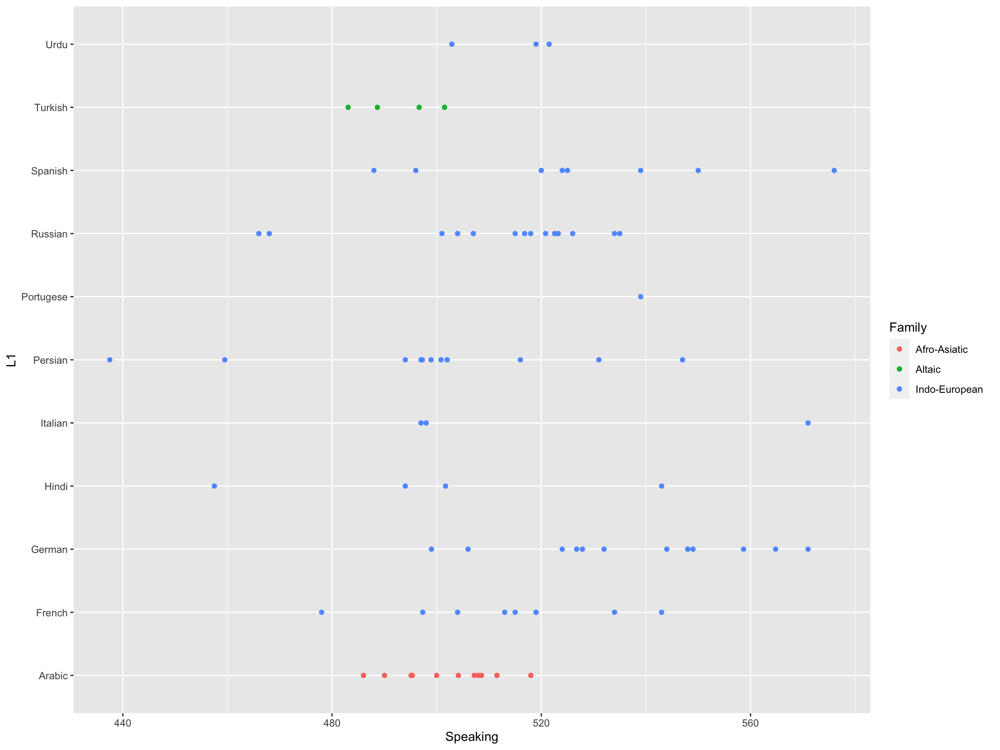
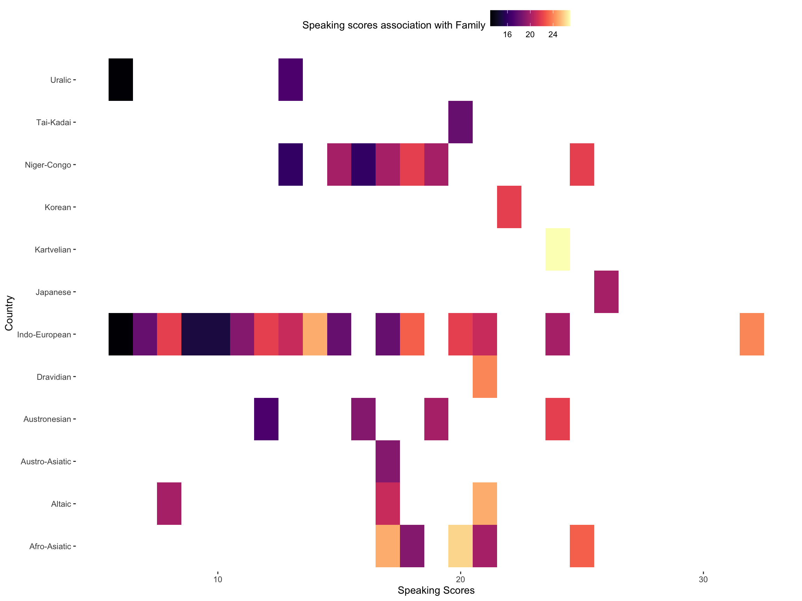

This dataset contains information on the proficiency and linguistic characteristics of adult language learners in the Netherlands. Drawing from results collected over several decades, it is a rich source regarding the relationship between language proficiency and various individual characteristics, such as native language, country of origin, age at arrival of residence in the Netherlands, length of residence in the Netherlands, days spent on formal education in Dutch as a second language, gender identity and family status. The dataset also includes scores from sections of an exam given to assess Dutch proficiency - speaking performance score; lexical score; morphology score; and new sounds/features section. With its abundance of data points identifying vital metrics related to language learning success stories globally this invaluable resource offers an exciting opportunity to uncover previously unseen correlations
The main goal of the current study was to examine whether increasing attentional effort (intensity of attention) via goal-setting can lead to a reduction in lapses of attention.
81 subjects completed the experiment in-person using an eye-tracker in exchange for class credit.
Participants completed a 4-choice reaction time task containing 180 trials that was programmed with E-Prime 2.0. Each trial starts on a grey screen with a 1-s fixation (+). Then, four dark-grey lines appear in a row at the center of the screen. After a random time interval (1-3 s in .250 second intervals), a dark_grey target (X) appears above one of the lines. The participant’s objective is to press the key on the keyboard that corresponds to the location of the target (‘c’,’v’,’b’,’n’). After the participant’s response, they see a 1-s feedback screen showing whether their answer was correct or incorrect, with correct answers also displaying their reaction time. Pupil size data is being collected concurrently for each trial.
This experiment has two conditions: control (no-goal) and harder-over-time (HOT). In the control condition, participants receive the following instructions: “Your goal on this task is to respond as quickly and accurately as possible.” In the HOT condition, the participants receive the initial instruction: “Your goal on this task is to keep your reaction times under .425 seconds.” This applies to the first block. For block 2, the participants are told: “Your new goal on this task is to keep your reaction times under .375 seconds.” Finally, block 3 has the instruction: “Your new goal on this task is to keep your reaction times under .325 seconds.”
Sustained attention involves maintaining your focus on a task for a period of time that can range from seconds to hours. The ability to sustain attention in this manner is a key component of our attentional system that is vital to everyday life. It is heavily influenced by factors such as: motivation, arousal, and alertness (Sadaghiani & D’Esposito, 2015; Jennings & van der Molen, 2005; Steinborn, Langner, & Huestegge, 2017; Unsworth & Miller, 2021). Sometimes tasks requiring sustained attention are relatively boring and unchallenging (also referred to as vigilant attention; Robertson, Manly, Andrade, Baddeley, & Yiend, 1997; Robertson & O’Connell, 2010). Multiple studies have found evidence that it is typically harder to maintain attention on tasks that are boring/easy and repetitive versus ones that require some sort of cognitive challenge (Robertson & O’Connell, 2010; Langner & Eickhoff, 2013). Although we generally perform fine in sustained attention situations, occasionally we experience lapses in attention. These could be, for example, daydreaming about a new crush, being distracted by honking cars driving by, or even just having your mind go blank. Essentially, attention lapses reflect momentary shifts of attention away from the task at hand that can lead to failures in completing intended actions (Casner & Schooler, 2014; Lindquist & McLean, 2011; Unsworth, Robison, & Miller, 2021; Unsworth & McMillan, 2017). The consequences of which range from forgetting to forward an email to your colleague to missing a red light and causing a car accident. Given how common attention lapses are, it is vital to investigate ways in which we can reduce their occurrence and severity.
 Column {data-width=350} ———————————————————————– ### Association of langauge proficiency with Family background
 Row {data-height=350} ———————————————————————– ### Speaking scores in different countries